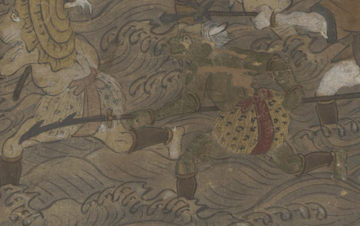

← 图鉴索引

緑の鬼のような化物。豹柄の腰巻きを身に付け、槍を持って駆けている。
出典：親書誌：U426_nichibunken_0282：[蝦夷征伐図]；エミシ セイバツ ズ／日付：2014／資源識別子：U426_nichibunken_0282_0008_0000
Copyright (c)2010- International Research Center for Japanese Studies, Kyoto, Japan. All rights reserved.